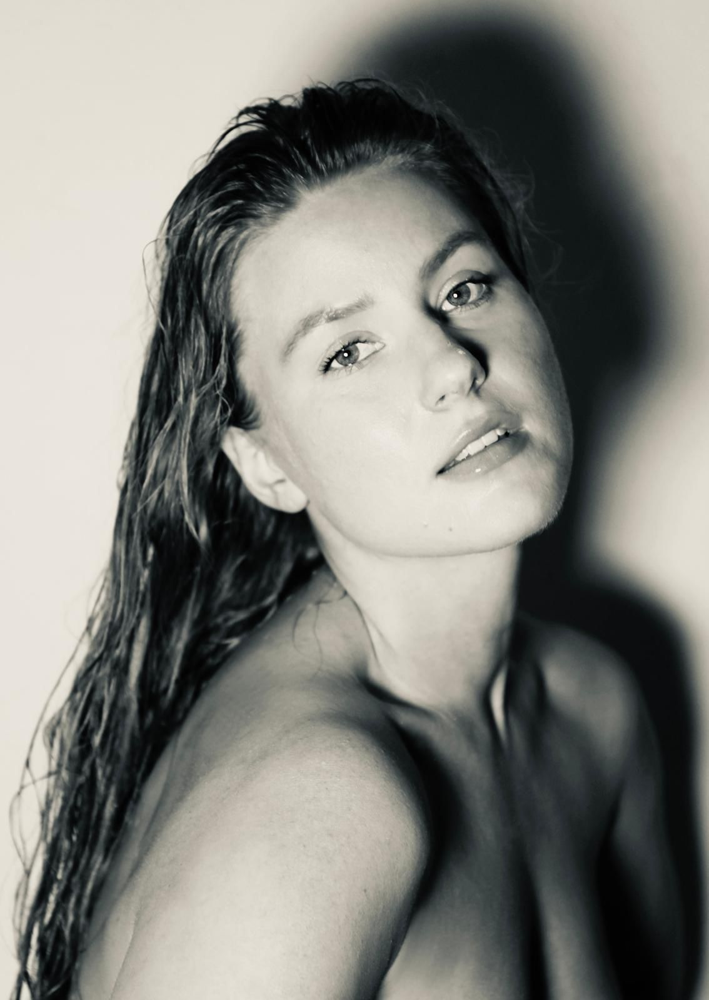
Estonian singer · songwriter
Kristin Kalnapenk
new music — out soon
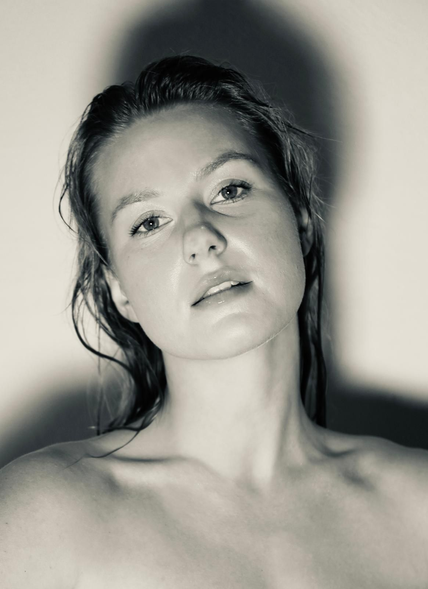
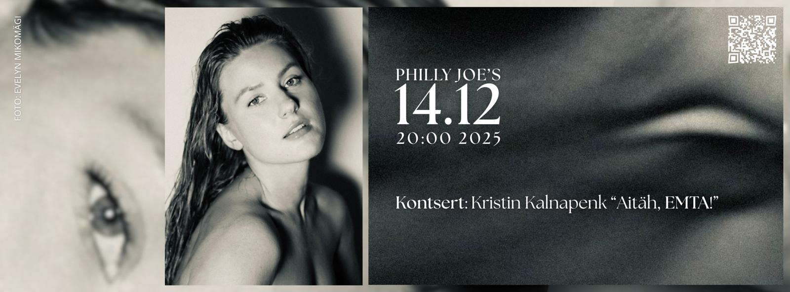
live — next
HeartBeat
Ekstaatiline tants & kontsert
with DJ Layqa &
the Kristin Kalnapenk bänd
Booking, press & collaborations — booking@kristinkalnapenk.com
upcoming
recently
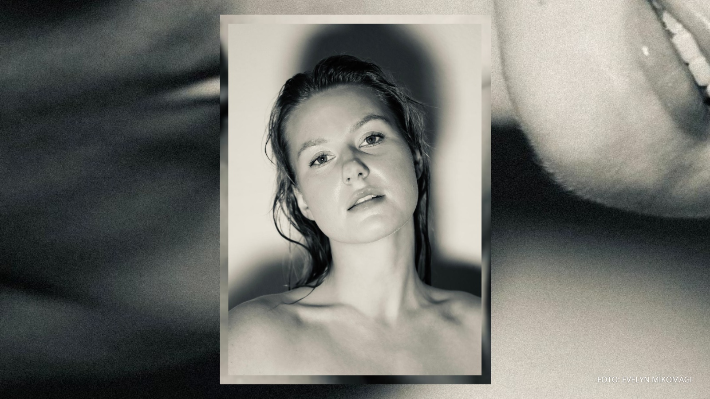
the latest
single
Südames
A song that lives in the chest — südames, inside the heart. Quiet at the edges, brave in the middle. Listen with the lights low.
about
A voice between Estonia
and Spain.
Kristin Kalnapenk is a Tallinn-based singer, songwriter, and composer, rooted in jazz with lyrics in Estonian, English, and Spanish. She spent twelve years in Spain from the age of ten, and most recently studied in the United States — returning home to finish her master’s at the Estonian Academy of Music and Theatre.
A voice that treats every lyric as something worth waiting for. Alongside it, aerial acrobatics and dance weave through her performances — music as one expression among many.
watch
on film

portraits
the book
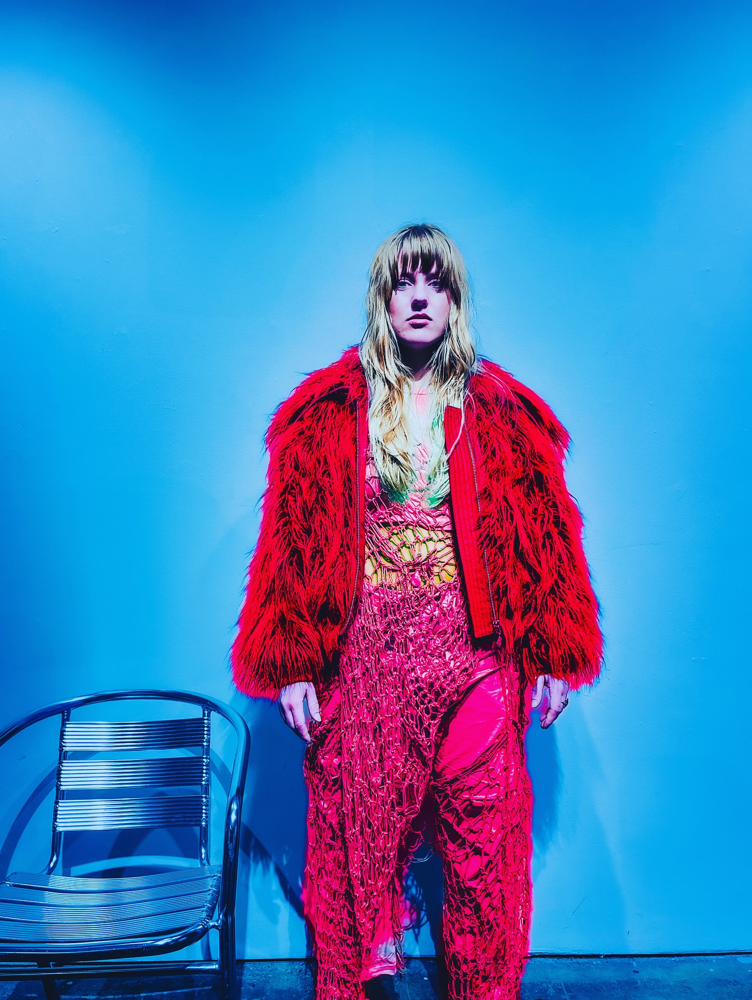
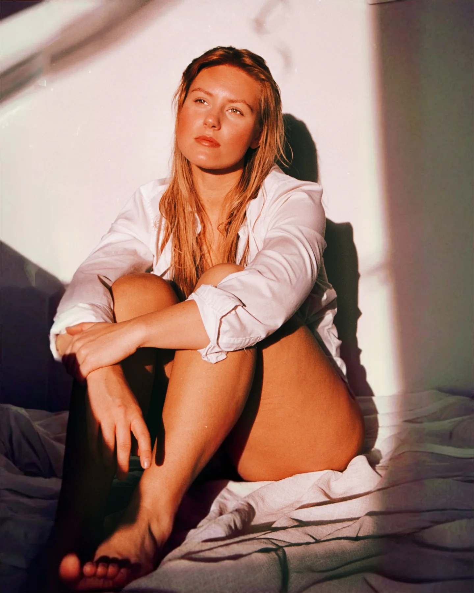
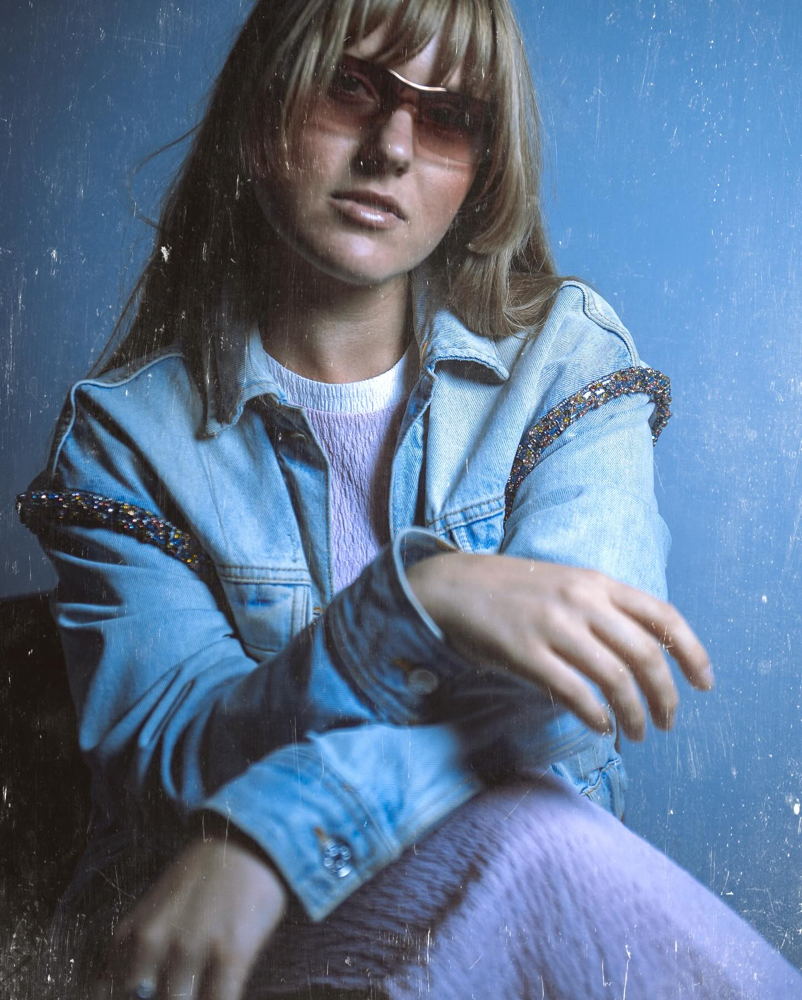
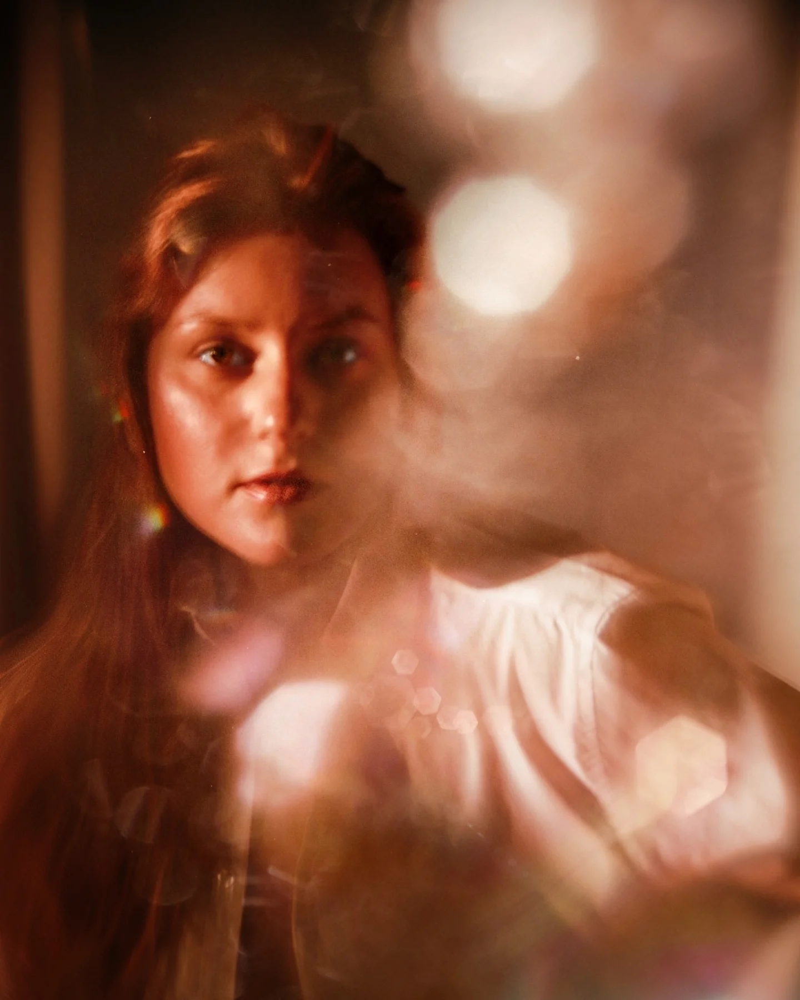
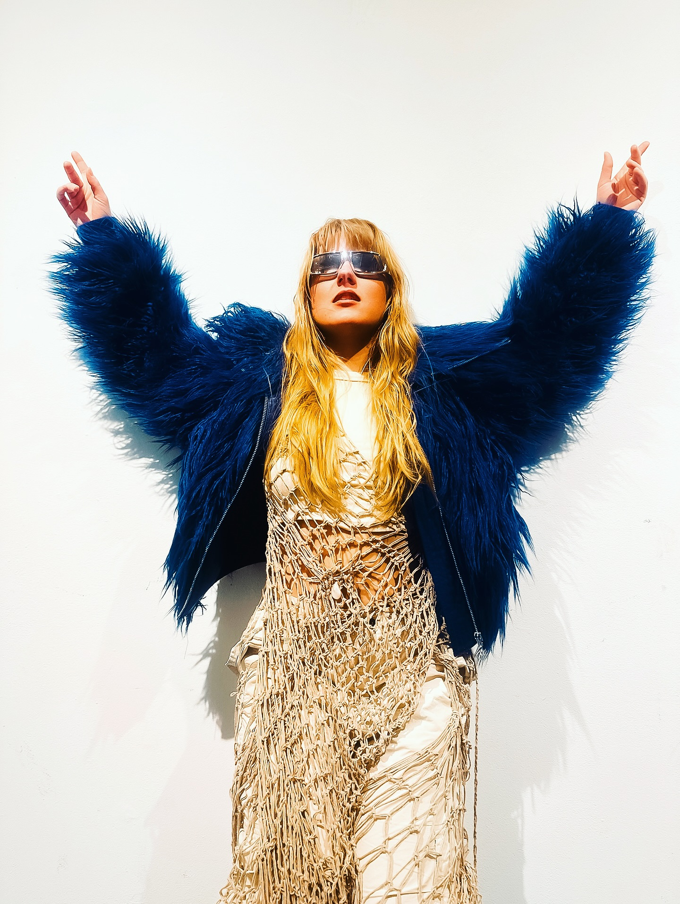
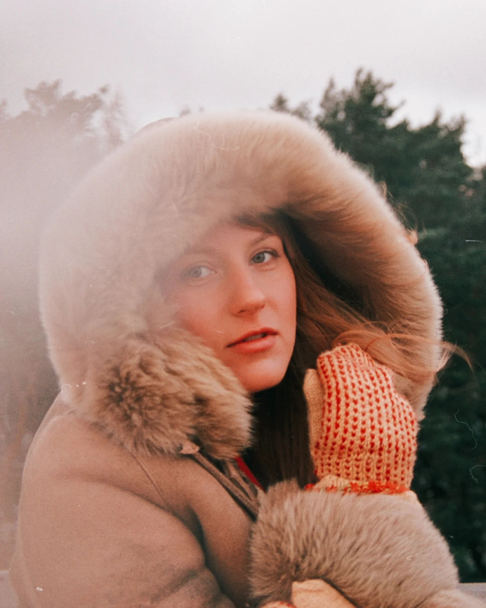
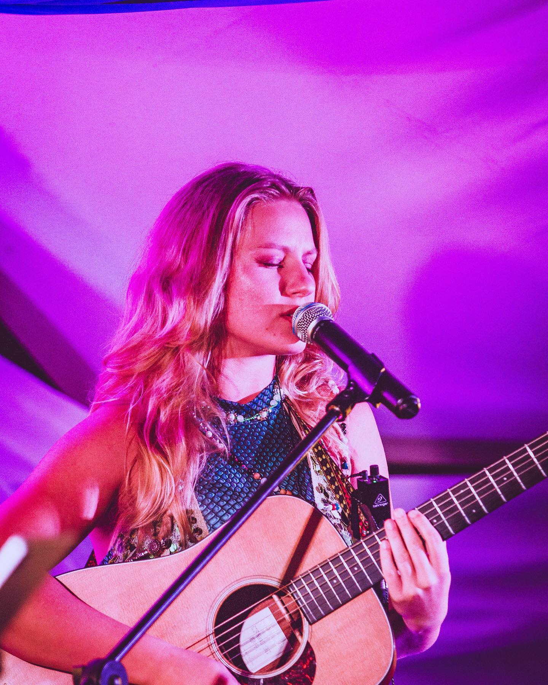
biography
A fuller picture.
One day when she was eleven, a verse drifted through her head and she realised it was her own. Songs started coming — and have kept coming, on guitar, on piano, and often just in the quiet of her mind. Most of them are first caught in ink on the page of a notebook; at concerts you’ll hear that same ink sung live over a jazz band’s improvisations.
From the fourth grade she lived twelve years in Spain. She writes lyrics in three languages — Estonian, English, Spanish — and sings in each of them on stage. She has been performing for close to fifteen years, most often in intimate rooms: weddings, birthdays, ceremonies, and listening-room sets where the lights stay low and the music asks for patience.
She earned her bachelor’s at the Estonian Academy of Music and Theatre and is completing her master’s there in jazz voice, composition, and pedagogy. Through EAMT’s Erasmus programme she spent time at Capital University in Columbus, Ohio, where local jazz musicians and audiences welcomed her warmly.
Teachers
Janet Taylor Jackson-Lummer · Kadri Voorand · Anne-Liis Poll · Susan Musselman
Voices she carries
Betty Carter · Ella Fitzgerald · Nancy Wilson · Nina Simone · Whitney Houston · D’Angelo · Jacob Collier · Prince · Miles Davis · Erykah Badu · Ariana Grande · Justin Timberlake · Hiatus Kaiyote · Nils Frahm